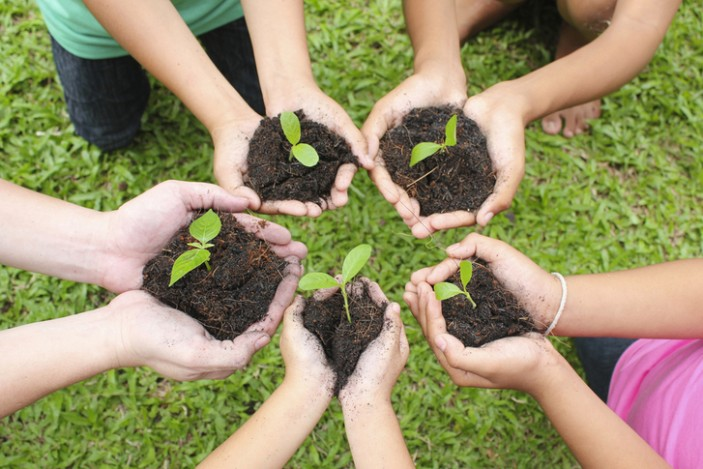
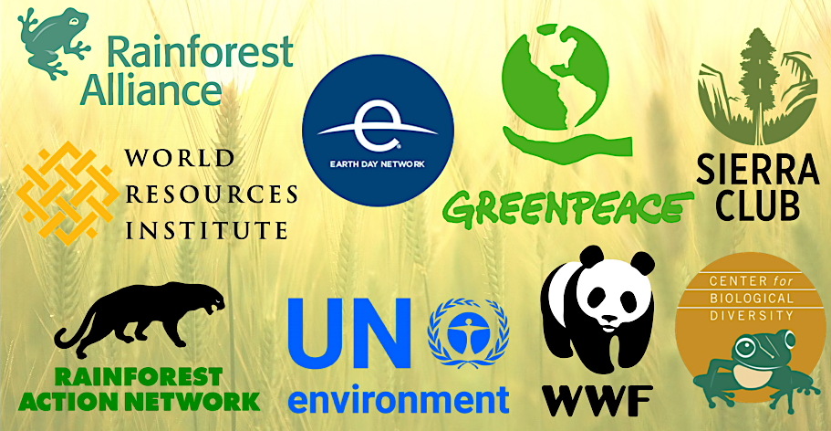
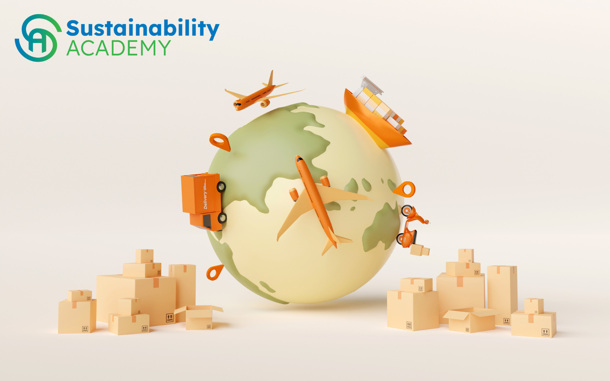
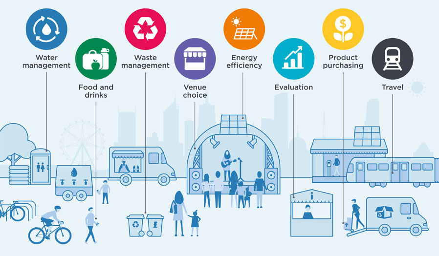

Resources and Action
Taking action and accessing resources is crucial for creating a sustainable future. Here are some resources and ways to get involved in sustainable practices and initiatives:
1. Sustainable Living Guides
Explore online guides and publications that provide practical tips and information on living a sustainable lifestyle. These resources cover topics such as energy conservation, waste reduction, sustainable fashion, green transportation, and eco-friendly home practices. They offer valuable insights, step-by-step guides, and actionable advice to help you make sustainable choices in your daily life.

2. Environmental Organizations
Connect with local and global environmental organizations that are actively working towards sustainability. These organizations often offer resources, volunteer opportunities, and campaigns focused on environmental protection, conservation, and advocacy. Joining or supporting such organizations allows you to contribute to collective efforts, collaborate with like-minded individuals, and stay updated on important sustainability initiatives and events.

3. Online Sustainability Courses
Enroll in online sustainability courses to deepen your understanding of environmental issues and learn about sustainable practices. Many universities, organizations, and platforms offer free or paid courses on topics such as renewable energy, sustainable business practices, green building design, ecological conservation, and sustainable agriculture. These courses provide valuable knowledge and empower you to take informed actions towards sustainability.

4. Sustainable Events and Workshops
Attend sustainability-focused events, workshops, and conferences in your area. These events bring together experts, professionals, and enthusiasts to share knowledge, experiences, and innovative ideas. You can learn about the latest sustainable technologies, network with like-minded individuals, participate in interactive workshops, and engage in discussions on pressing environmental issues. These events provide opportunities for collaboration, inspiration, and practical insights for taking action.

5. Government Resources and Policies
Stay informed about government initiatives, policies, and incentives related to sustainability. Government websites, environmental agencies, and sustainability-focused departments often provide information on renewable energy programs, green building codes and certifications, waste management regulations, eco-friendly transportation initiatives, and more. By understanding and utilizing these resources, you can align your actions with larger-scale sustainability efforts and contribute to positive change.
Back to Top